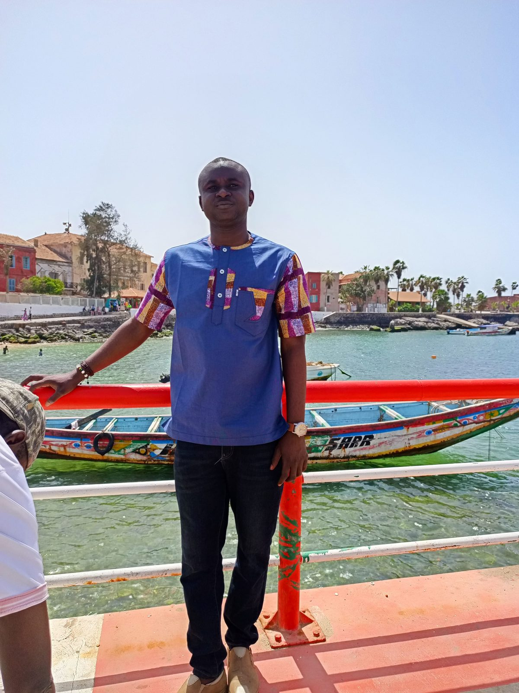

Je suis Adnan Adamou Daouda, Data Analyst & Information Manager basé à Niamey. Docteur en géographie de l'Université Abdou Moumouni de Niamey, je travaille avec des organisations humanitaires et de développement pour transformer la collecte de données du terrain en information décisionnelle.
Mon parcours s'est construit autour des outils standards du secteur — KoboToolbox, ODK, DHIS2, Tableau, Power BI — et d'une conviction simple : une donnée mal collectée n'aide personne. Je conçois des dispositifs d'enquête robustes, des pipelines automatisés (Make, Zapier, Google Apps Script), et des tableaux de bord lisibles par les équipes opérationnelles.
J'ai conduit des missions dans plusieurs pays d'Afrique subsaharienne — Mali, Burkina Faso, République Démocratique du Congo, République Centrafricaine — pour y déployer des systèmes de collecte et de traitement de données. En parallèle, je partage cette expertise sur Data Solution, ma chaîne YouTube francophone qui forme des milliers de professionnels aux outils de données.
I am Adnan Adamou Daouda, a Data Analyst & Information Manager based in Niamey. Holding a PhD in Geography from Université Abdou Moumouni de Niamey, I work with humanitarian and development organizations to turn field data collection into actionable insight.
My practice is built around the sector's standard toolkit — KoboToolbox, ODK, DHIS2, Tableau, Power BI — and one simple conviction: badly collected data helps no one. I design robust survey instruments, automated pipelines (Make, Zapier, Google Apps Script), and dashboards readable by operational teams.
I have carried out assignments across several Sub-Saharan African countries — Mali, Burkina Faso, the Democratic Republic of Congo, the Central African Republic — to implement data collection and processing systems. Alongside this, I share this expertise on Data Solution, my French-language YouTube channel training thousands of professionals in data tools.
Un formulaire bien conçu vaut dix tableaux de bord. Validation, contraintes, logique de saut, traduction terrain. A well-designed form is worth ten dashboards. Validation, constraints, skip logic, field translation.
Automatiser sans cacher. Chaque étape de transformation doit pouvoir être expliquée à un non-technicien. Automate without hiding. Every transformation step must be explainable to a non-technical stakeholder.
Une visualisation utile répond à une question opérationnelle. Pas plus, pas moins. A useful visualization answers one operational question. No more, no less.
Mission, formation, audit de pipeline ou simple question — j'apporte une réponse sous 48 h. Assignment, training, pipeline audit or a simple question — I reply within 48 hours.
Pour les projets confidentiels, merci d'indiquer un cadre de discussion. For confidential projects, please indicate a discussion framework.